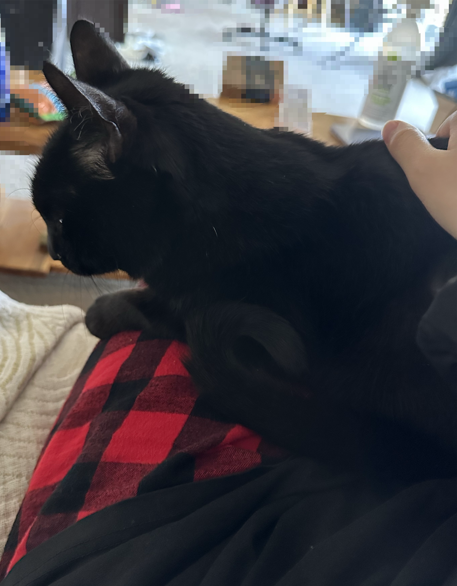
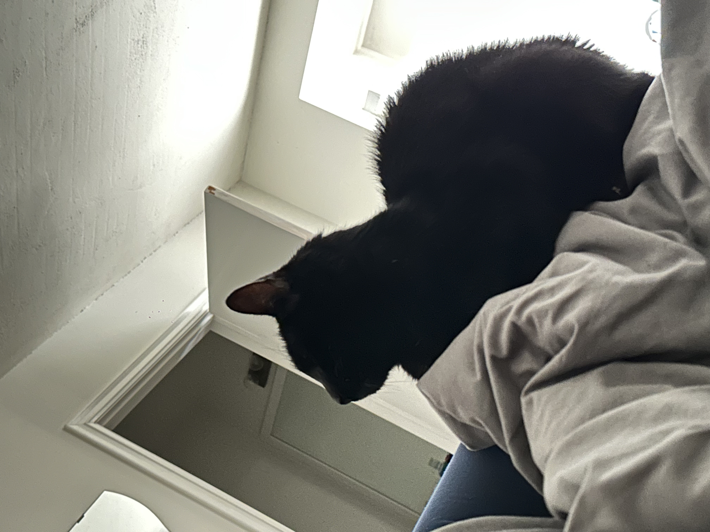

About Chungo
Chungo is a 13-year and 5-month-old American Shorthair cat. He belongs to my boyfriend.
My Thoughts on Chungo
Although I have always been a dog person, Chungo has gradually made me appreciate cats. He has a unique personality!
Chungo's Three Key Traits
- Cool and aloof
- Very greedy for food
- Occasionally makes a mess (which can be frustrating!)
Recent Health Concerns
Chungo has been feeling unwell recently. I hope he recovers soon.
Photo Gallery
 